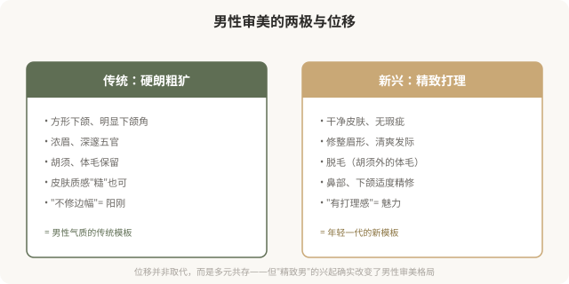
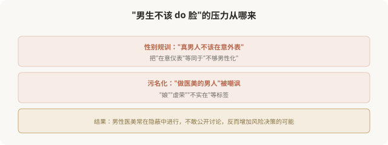

先说结论：男性医美正在快速增长，男性审美也在从传统的“硬朗、粗犷”向“精致、洁净、有打理感”位移。常见的男性医美项目包括皮肤管理、脱毛、鼻综合、下颌塑形、发际线调整等。但与女性不同，男性 do 脸仍承受较强的耻感压力，“男人不该在意这些”。这种纠结本身，反映了性别审美的双重标准，也让男性医美消费者面临独特的心理困境。这一篇盘点男性医美美学，也反思它背后的性别规训。
男性医美审美的两极

男性医美的主要项目
| 项目 | 审美诉求 |
|---|---|
| 皮肤管理（光电、刷酸） | 干净、无痘印、肤色均匀 |
| 脱毛（络腮胡修整、体毛） | 清爽、有打理感 |
| 鼻综合 | 高挺、立体、男性化鼻 |
| 下颌塑形 | 清晰下颌线、方形感 |
| 发际线调整/植发 | 年轻、精神 |
| 痤疮治疗 | 皮肤健康 |
| 眼袋/双眼皮 | 精神、不疲惫（保守） |
男性医美有一个重要特点：通常追求“看不出来”的保守改善，这与男性 do 脸的耻感有关。多数男性不希望被看出“做过”，所以男性医美往往比女性更克制（这本身也是个值得反思的现象）。
男性 do 脸的耻感

男性 do 脸的耻感，本质是性别刻板印象对男性的束缚，它规定“男性应该怎样”，把在意外表打成“不够男人”。这种束缚和女性承受的审美压力是一体两面：两性都被困在各自的“应该”里。
一个值得反思的双重标准
观察一个有趣的现象：
- 女性做医美：被评价为“正常”（甚至“应该”），但做得过度会被嘲讽。
- 男性做医美：被评价为“奇怪”（甚至“丢人”），但做得克制可能被认可。
这种双重标准说明：社会对两性的审美规训方式不同，但都在规训。女性被要求“必须美”，男性被要求“不能太在意美”。两者都是束缚。
男性医美的合理边界
男性如果考虑医美，几个原则：
- 明确诉求：解决具体问题（如痤疮、脱发、明显不对称），而非追逐流行模板。
- 保守优先：男性审美通常追求“看不出”，克制剂量、保留男性特征。
- 避免女性化模板：男性五官、轮廓有自身美学（如方形下颌、男性鼻），不应套用女性模板。
- 警惕营销：男性医美市场正在扩张，机构话术也在制造男性焦虑（如“油腻男”“邋遢男”）。
- 不可逆慎重：尤其骨骼手术，男性审美潮流变化同样快。
一个更深的问题
男性医美的兴起，是男性从“硬朗规训”中部分释放的过程，允许男性在意仪表、允许男性追求精致。这本身有积极意义：它松动了对男性的单一期待。
但也要警惕：男性医美可能复制女性医美的问题，焦虑驱动、趋同化、过度消费、不可逆后悔。男性不必走女性踩过的坑。如果男性 do 脸最终也走向“必须精致”“不能邋遢”的新规训，那不过是换了一种束缚。
如何清醒地看待男性医美
- 释放不必内疚：男性在意外表不丢人，是个人选择的权利。
- 但不必过度：克制和健康优先，不为“精致”焦虑。
- 保留多元：硬朗、精致、粗犷、清爽都是男性美的可能，不必挤进一种。
- 警惕新规训：不要从“必须硬朗”跳到“必须精致”。
- 反思性别偏见：无论男女，审美选择都不该被性别标签绑架。
一个反思
男性医美的兴起，是性别审美多元的一步。真正健康的状态，是每个人，无论男女，都能自由地选择自己在意外表的程度和方式，不被“应该怎样”的性别标签束缚。男性 do 脸不丢人，男性不 do 脸也不丢人；女性爱美不肤浅，女性不爱美也不反常。当审美选择真正属于个人，而不是属于性别规训，才是真正的解放。
本文用于健康教育与文化反思，不构成对任何审美选择的否定；具体医美决策须结合个体情况与具备资质的医师面诊。